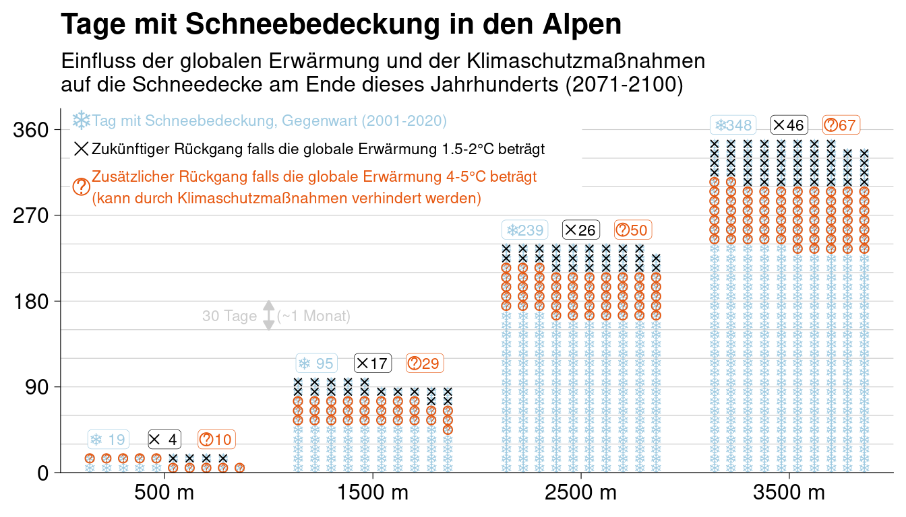
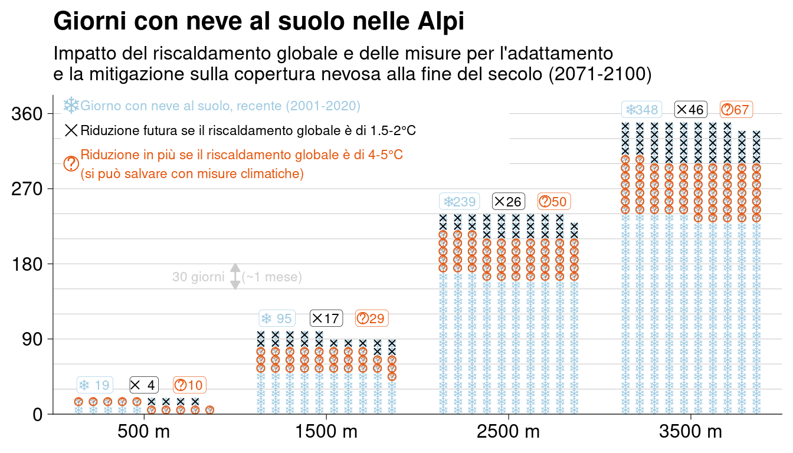
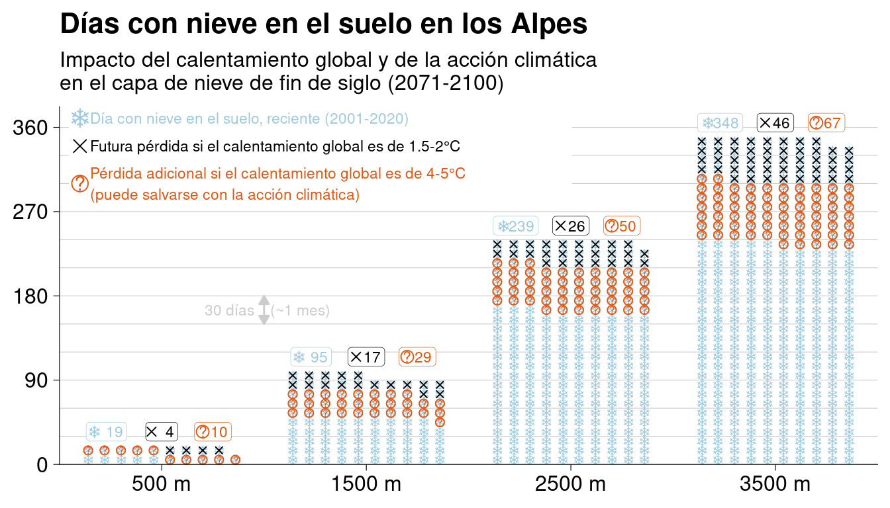
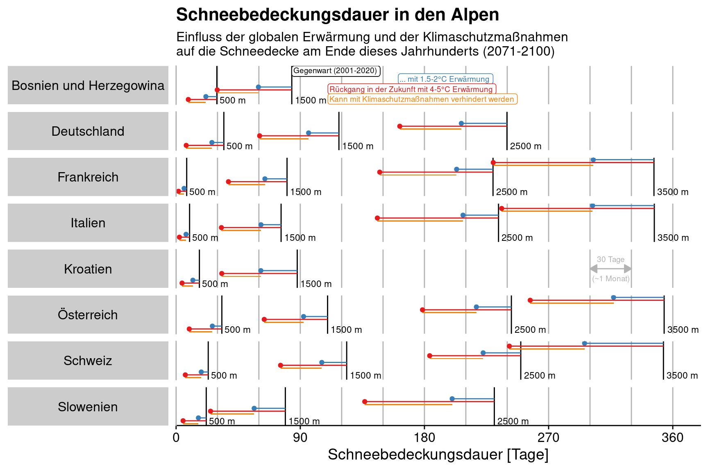

What can be saved? The impact of climate action on 21st century snow cover duration in the Alps.



Overview by countries in the Greater Alpine Region (GAR).

500 m | 1500 m | 2500 m | 3500 m | |
Austria | -7 d (-21%) | -17 d (-16%) | -25 d (-10%) | -37 d (-10%) |
Bosnia and Herzegovina | -8 d (-27%) | -24 d (-29%) | ||
Croatia | -5 d (-28%) | -26 d (-30%) | ||
France | -2 d (-25%) | -16 d (-20%) | -26 d (-12%) | -44 d (-13%) |
Germany | -9 d (-25%) | -22 d (-19%) | -33 d (-14%) | |
Italy | -3 d (-26%) | -15 d (-19%) | -26 d (-11%) | -45 d (-13%) |
Slovenia | -6 d (-26%) | -23 d (-28%) | -31 d (-13%) | |
Switzerland | -5 d (-22%) | -18 d (-15%) | -27 d (-11%) | -57 d (-16%) |
500 m | 1500 m | 2500 m | 3500 m | |
Austria | -24 d (-71%) | -46 d (-42%) | -64 d (-26%) | -97 d (-27%) |
Bosnia and Herzegovina | -21 d (-70%) | -54 d (-64%) | ||
Croatia | -13 d (-74%) | -55 d (-62%) | ||
France | -6 d (-77%) | -42 d (-53%) | -82 d (-36%) | -116 d (-34%) |
Germany | -27 d (-79%) | -57 d (-49%) | -78 d (-32%) | |
Italy | -7 d (-76%) | -43 d (-57%) | -88 d (-38%) | -111 d (-32%) |
Slovenia | -17 d (-77%) | -54 d (-68%) | -94 d (-41%) | |
Switzerland | -17 d (-71%) | -48 d (-39%) | -66 d (-26%) | -112 d (-32%) |
Open map of current (2001-2020) average annual snow cover duration (SCD). Click on any point to show associated value. Use layers control on left to toggle between current and future SCD under different greenhouse gas concentration scenarios.
{Update June 2022: Possibly not working}
Open slider with two maps in background comparing the present snow cover duration to the future under different greenhouse gas (GHG) concentration scenarios, the so-called representative concentration pathways (RCP).
{Update June 2022: Possibly not working}
Open sliders with maps in the background that compare the difference between climate action and rising greenhouse gas (GHG) concentrations for two future periods.
Climate action corresponds to RCP2.6, which is 1.5-2C of global warming, while rising GHG corresponds to RCP8.5, which amounts to 4-5C of global warming.
---
title: "Future snow | CliRSnow"
output:
flexdashboard::flex_dashboard:
self_contained: false
lib_dir: libs
fig_mobile: false
theme: bootstrap
orientation: columns
vertical_layout: fill
social: menu
source: embed
logo: other/logo_72x48.png
favicon: other/logo_72x48.png
navbar:
- { icon: "fa-share", title: "Main Dash", href: "./", align: right }
---
```{r setup, include=FALSE}
library(flexdashboard)
library(data.table)
library(forcats)
library(magrittr)
library(ggplot2)
library(flextable)
```
```{r, include=TRUE}
htmltools::tagList(fontawesome::fa_html_dependency())
```
```{r data-prep-summary}
load(here::here("data/future-summary-elev-500m.rda"))
setnames(dat_bc, "alt_f", "elev_f")
dat_bc[, elev := tstrsplit(elev_f, ",") %>% sapply(readr::parse_number) %>% rowMeans]
dat_ds[, elev := tstrsplit(elev_f, ",") %>% sapply(readr::parse_number) %>% rowMeans]
dat_ens_mean <- dat_ds[elev > 200 & elev < 3600,
.(scd = round(mean(scd))),
.(elev_f, elev, experiment, period, fp)]
# dat_ens_mean <- dat_bc[elev > 200 & elev < 3600,
# .(scd = mean(snc)*365),
# .(elev_f, elev, experiment, period, fp)]
dat_ens_mean[, period_f := fct_recode(period,
"2001\n-\n2020" = "2001-2020",
"2041\n-\n2070" = "2041-2070",
"2071\n-\n2100" = "2071-2100")]
dat_ens_mean[period != "2041-2070"] %>%
dcast(elev ~ experiment + fp, value.var = "scd") -> dat_lollipop
dat_lollipop[, elev_fct := fct_inorder(paste0(elev, " m"))]
dat_lollipop[, .(elev,
v1 = rcp85_future,
v2 = rcp26_future - rcp85_future,
v3 = rcp26_past - rcp26_future)] %>%
melt(id.vars = "elev",
measure.vars = paste0("v", 1:3)) %>%
.[,
.(i_dot_grp = 1:round(value)),
.(elev, variable)] -> dat_dp
dat_dp[, i_dot := 1:.N - 1, elev]
dat_dp[, xx := i_dot %% 10]
dat_dp[, yy := i_dot %/% 10]
x_rat <- 80
elev_plot <- c(500, 1500, 2500, 3500)
dat_dp[, xx_plot := elev + x_rat*xx - 9*x_rat/2]
dat_text <- dat_lollipop[elev %in% elev_plot,
.(elev,
yy = ceiling(rcp26_past/10) + 1.5,
past = round(rcp26_past),
loss = round(rcp26_past - rcp26_future),
climact = round(rcp26_future - rcp85_future))]
dat_text[, past_ch := sprintf("%6s", past)]
dat_text[, loss_ch := sprintf("%5s", loss)]
dat_text[, climact_ch := sprintf("%5s", climact)]
```
# Summary
## Column {.tabset .tabset-fade}
> What can be saved? The impact of climate action on 21st century snow cover duration in the Alps.
### English
```{r fig.width=7, fig.height=4}
dat_dp[elev %in% elev_plot] %>%
ggplot(aes(xx_plot, yy+0.5))+
geom_hline(yintercept = 0:12*3, colour = grey(0.8), size = 0.2)+ # 1 month
geom_point(shape = "\u2744", size = 2.5, colour = "#9ecae1")+
geom_point(data = dat_dp[elev %in% elev_plot & variable == "v3"] ,
shape = 4, size = 1.5, colour = "black")+
geom_point(data = dat_dp[elev %in% elev_plot & variable == "v2"] ,
shape = 1, size = 2, colour = "#e6550d")+
geom_text(data = dat_dp[elev %in% elev_plot & variable == "v2"] ,
label = "?", fontface = "plain", size = 2, colour = "#e6550d")+
cowplot::theme_cowplot(line_size = 0.2)+
theme(plot.background = element_rect(colour = "white", fill = "white"))+
scale_x_continuous(NULL, limits = c(0, 4000), expand = c(0,0),
breaks = elev_plot, labels = paste0(elev_plot, " m"))+
# scale_y_continuous(NULL, breaks = c(0,10,20,30), labels = c(0,10,20,30)*10)+
scale_y_continuous(NULL, limits = c(0, 36.2 + 2), expand = c(0,0),
breaks = c(0,9,18,27,36), labels = c(0,9,18,27,36)*10)+
ggtitle("Days with snow on ground in the Alps",
"Impact of global warming and climate action for end of century (2071-2100) snow cover")+
#legend
annotate("rect", xmin = 50, xmax = 2500, ymin = 28.5, ymax = 37.5,
colour = "white", fill = "white")+
annotate("point", 100, 36, shape = "\u2744", size = 5, colour = "#9ecae1")+
annotate("text", 150, 36, hjust = 0, vjust = 0.5, size = 3,
label = "Day with snow on ground, recent (2001-2020)", colour = "#9ecae1")+
annotate("point", 100, 33, shape = 4, size = 3, colour = "black")+
annotate("text", 150, 33, hjust = 0, vjust = 0.5, size = 3,
label = "Future loss if global warming is 1.5-2C (commited loss)", colour = "black")+
annotate("point", 100, 30, shape = 1, size = 4, colour = "#e6550d")+
annotate("text", 100, 30, label = "?", fontface = "plain", size = 4, colour = "#e6550d")+
annotate("text", 150, 30, hjust = 0, vjust = 0.5, size = 3,
label = "Extra loss if global warming is 4-5C (can be saved with climate action)",
colour = "#e6550d")+
# grid stuff
annotate("segment", x = 1000, xend = 1000, y = 18, yend = 15, colour = grey(0.8),
arrow = arrow(ends = "both", type = "closed", length = unit(0.075, "in")))+
annotate("text", x = 1000, y = 16.5, hjust = -0.1, size = 3,
label = "(~1 month)", colour = grey(0.8))+
annotate("text", x = 1000, y = 16.5, hjust = 1.2, size = 3,
label = "30 days", colour = grey(0.8))+
# text
geom_label(data = dat_text,
aes(elev - 270, yy, label = past_ch),
hjust = 0.5, vjust = 0.5, colour = "#9ecae1", size = 3,
label.padding = unit(0.15, "lines"), label.size = 0.12)+
geom_point(data = dat_text,
aes(elev - 270 - 60, yy),
shape = "\u2744", size = 3, colour = "#9ecae1")+
geom_label(data = dat_text,
aes(elev, yy, label = loss_ch),
hjust = 0.5, vjust = 0.5, colour = "black", size = 3,
label.padding = unit(0.15, "lines"), label.size = 0.12)+
geom_point(data = dat_text,
aes(elev - 50, yy),
shape = 4, size = 2, colour = "black")+
geom_label(data = dat_text,
aes(elev + 250, yy, label = climact_ch),
hjust = 0.5, vjust = 0.5, colour = "#e6550d", size = 3,
label.padding = unit(0.15, "lines"), label.size = 0.12)+
geom_point(data = dat_text,
aes(elev + 250 - 50, yy),
shape = 1, size = 3, colour = "#e6550d")+
geom_text(data = dat_text,
aes(elev + 250 - 50, yy, label = "?"),
size = 3, colour = "#e6550d")
```
### Deutsch
```{r fig.width=7, fig.height=4}
dat_dp[elev %in% elev_plot] %>%
ggplot(aes(xx_plot, yy+0.5))+
geom_hline(yintercept = 0:12*3, colour = grey(0.8), size = 0.2)+ # 1 month
geom_point(shape = "\u2744", size = 2.5, colour = "#9ecae1")+
geom_point(data = dat_dp[elev %in% elev_plot & variable == "v3"] ,
shape = 4, size = 1.5, colour = "black")+
geom_point(data = dat_dp[elev %in% elev_plot & variable == "v2"] ,
shape = 1, size = 2, colour = "#e6550d")+
geom_text(data = dat_dp[elev %in% elev_plot & variable == "v2"] ,
label = "?", fontface = "plain", size = 2, colour = "#e6550d")+
cowplot::theme_cowplot(line_size = 0.2)+
theme(plot.background = element_rect(colour = "white", fill = "white"))+
scale_x_continuous(NULL, limits = c(0, 4000), expand = c(0,0),
breaks = elev_plot, labels = paste0(elev_plot, " m"))+
# scale_y_continuous(NULL, breaks = c(0,10,20,30), labels = c(0,10,20,30)*10)+
scale_y_continuous(NULL, limits = c(0, 36.2 + 2), expand = c(0,0),
breaks = c(0,9,18,27,36), labels = c(0,9,18,27,36)*10)+
ggtitle("Tage mit Schneebedeckung in den Alpen",
"Einfluss der globalen Erwrmung und der Klimaschutzmanahmen \nauf die Schneedecke am Ende dieses Jahrhunderts (2071-2100)")+
#legend
annotate("rect", xmin = 50, xmax = 2500, ymin = 28.5, ymax = 37.5,
colour = "white", fill = "white")+
annotate("point", 100, 36+1, shape = "\u2744", size = 5, colour = "#9ecae1")+
annotate("text", 150, 36+1, hjust = 0, vjust = 0.5, size = 3,
label = "Tag mit Schneebedeckung, Gegenwart (2001-2020)", colour = "#9ecae1")+
annotate("point", 100, 33+1, shape = 4, size = 3, colour = "black")+
annotate("text", 150, 33+1, hjust = 0, vjust = 0.5, size = 3,
label = "Zuknftiger Rckgang falls die globale Erwrmung 1.5-2C betrgt", colour = "black")+
annotate("point", 100, 30, shape = 1, size = 4, colour = "#e6550d")+
annotate("text", 100, 30, label = "?", fontface = "plain", size = 4, colour = "#e6550d")+
annotate("text", 150, 30, hjust = 0, vjust = 0.5, size = 3,
label = "Zustzlicher Rckgang falls die globale Erwrmung 4-5C betrgt\n(kann durch Klimaschutzmanahmen verhindert werden)",
colour = "#e6550d")+
# grid stuff
annotate("segment", x = 1000, xend = 1000, y = 18, yend = 15, colour = grey(0.8),
arrow = arrow(ends = "both", type = "closed", length = unit(0.075, "in")))+
annotate("text", x = 1000, y = 16.5, hjust = -0.1, size = 3,
label = "(~1 Monat)", colour = grey(0.8))+
annotate("text", x = 1000, y = 16.5, hjust = 1.2, size = 3,
label = "30 Tage", colour = grey(0.8))+
# text
geom_label(data = dat_text,
aes(elev - 270, yy, label = past_ch),
hjust = 0.5, vjust = 0.5, colour = "#9ecae1", size = 3,
label.padding = unit(0.15, "lines"), label.size = 0.12)+
geom_point(data = dat_text,
aes(elev - 270 - 60, yy),
shape = "\u2744", size = 3, colour = "#9ecae1")+
geom_label(data = dat_text,
aes(elev, yy, label = loss_ch),
hjust = 0.5, vjust = 0.5, colour = "black", size = 3,
label.padding = unit(0.15, "lines"), label.size = 0.12)+
geom_point(data = dat_text,
aes(elev - 50, yy),
shape = 4, size = 2, colour = "black")+
geom_label(data = dat_text,
aes(elev + 250, yy, label = climact_ch),
hjust = 0.5, vjust = 0.5, colour = "#e6550d", size = 3,
label.padding = unit(0.15, "lines"), label.size = 0.12)+
geom_point(data = dat_text,
aes(elev + 250 - 50, yy),
shape = 1, size = 3, colour = "#e6550d")+
geom_text(data = dat_text,
aes(elev + 250 - 50, yy, label = "?"),
size = 3, colour = "#e6550d")
```
### Italiano
```{r fig.width=7, fig.height=4}
dat_dp[elev %in% elev_plot] %>%
ggplot(aes(xx_plot, yy+0.5))+
geom_hline(yintercept = 0:12*3, colour = grey(0.8), size = 0.2)+ # 1 month
geom_point(shape = "\u2744", size = 2.5, colour = "#9ecae1")+
geom_point(data = dat_dp[elev %in% elev_plot & variable == "v3"] ,
shape = 4, size = 1.5, colour = "black")+
geom_point(data = dat_dp[elev %in% elev_plot & variable == "v2"] ,
shape = 1, size = 2, colour = "#e6550d")+
geom_text(data = dat_dp[elev %in% elev_plot & variable == "v2"] ,
label = "?", fontface = "plain", size = 2, colour = "#e6550d")+
cowplot::theme_cowplot(line_size = 0.2)+
theme(plot.background = element_rect(colour = "white", fill = "white"))+
scale_x_continuous(NULL, limits = c(0, 4000), expand = c(0,0),
breaks = elev_plot, labels = paste0(elev_plot, " m"))+
# scale_y_continuous(NULL, breaks = c(0,10,20,30), labels = c(0,10,20,30)*10)+
scale_y_continuous(NULL, limits = c(0, 36.2 + 2), expand = c(0,0),
breaks = c(0,9,18,27,36), labels = c(0,9,18,27,36)*10)+
ggtitle("Giorni con neve al suolo nelle Alpi",
"Impatto del riscaldamento globale e delle misure per l'adattamento \ne la mitigazione sulla copertura nevosa alla fine del secolo (2071-2100)")+
#legend
annotate("rect", xmin = 50, xmax = 2500, ymin = 28.5, ymax = 37.5,
colour = "white", fill = "white")+
annotate("point", 100, 36+1, shape = "\u2744", size = 5, colour = "#9ecae1")+
annotate("text", 150, 36+1, hjust = 0, vjust = 0.5, size = 3,
label = "Giorno con neve al suolo, recente (2001-2020)", colour = "#9ecae1")+
annotate("point", 100, 33+1, shape = 4, size = 3, colour = "black")+
annotate("text", 150, 33+1, hjust = 0, vjust = 0.5, size = 3,
label = "Riduzione futura se il riscaldamento globale di 1.5-2C", colour = "black")+
annotate("point", 100, 30, shape = 1, size = 4, colour = "#e6550d")+
annotate("text", 100, 30, label = "?", fontface = "plain", size = 4, colour = "#e6550d")+
annotate("text", 150, 30, hjust = 0, vjust = 0.5, size = 3,
label = "Riduzione in pi se il riscaldamento globale di 4-5C\n(si pu salvare con misure climatiche)",
colour = "#e6550d")+
# grid stuff
annotate("segment", x = 1000, xend = 1000, y = 18, yend = 15, colour = grey(0.8),
arrow = arrow(ends = "both", type = "closed", length = unit(0.075, "in")))+
annotate("text", x = 1000, y = 16.5, hjust = -0.1, size = 3,
label = "(~1 mese)", colour = grey(0.8))+
annotate("text", x = 1000, y = 16.5, hjust = 1.2, size = 3,
label = "30 giorni", colour = grey(0.8))+
# text
geom_label(data = dat_text,
aes(elev - 270, yy, label = past_ch),
hjust = 0.5, vjust = 0.5, colour = "#9ecae1", size = 3,
label.padding = unit(0.15, "lines"), label.size = 0.12)+
geom_point(data = dat_text,
aes(elev - 270 - 60, yy),
shape = "\u2744", size = 3, colour = "#9ecae1")+
geom_label(data = dat_text,
aes(elev, yy, label = loss_ch),
hjust = 0.5, vjust = 0.5, colour = "black", size = 3,
label.padding = unit(0.15, "lines"), label.size = 0.12)+
geom_point(data = dat_text,
aes(elev - 50, yy),
shape = 4, size = 2, colour = "black")+
geom_label(data = dat_text,
aes(elev + 250, yy, label = climact_ch),
hjust = 0.5, vjust = 0.5, colour = "#e6550d", size = 3,
label.padding = unit(0.15, "lines"), label.size = 0.12)+
geom_point(data = dat_text,
aes(elev + 250 - 50, yy),
shape = 1, size = 3, colour = "#e6550d")+
geom_text(data = dat_text,
aes(elev + 250 - 50, yy, label = "?"),
size = 3, colour = "#e6550d")
```
### Franais
```{r fig.width=7, fig.height=4}
dat_dp[elev %in% elev_plot] %>%
ggplot(aes(xx_plot, yy+0.5))+
geom_hline(yintercept = 0:12*3, colour = grey(0.8), size = 0.2)+ # 1 month
geom_point(shape = "\u2744", size = 2.5, colour = "#9ecae1")+
geom_point(data = dat_dp[elev %in% elev_plot & variable == "v3"] ,
shape = 4, size = 1.5, colour = "black")+
geom_point(data = dat_dp[elev %in% elev_plot & variable == "v2"] ,
shape = 1, size = 2, colour = "#e6550d")+
geom_text(data = dat_dp[elev %in% elev_plot & variable == "v2"] ,
label = "?", fontface = "plain", size = 2, colour = "#e6550d")+
cowplot::theme_cowplot(line_size = 0.2)+
theme(plot.background = element_rect(colour = "white", fill = "white"))+
scale_x_continuous(NULL, limits = c(0, 4000), expand = c(0,0),
breaks = elev_plot, labels = paste0(elev_plot, " m"))+
# scale_y_continuous(NULL, breaks = c(0,10,20,30), labels = c(0,10,20,30)*10)+
scale_y_continuous(NULL, limits = c(0, 36.2 + 2), expand = c(0,0),
breaks = c(0,9,18,27,36), labels = c(0,9,18,27,36)*10)+
ggtitle("Jours avec couverture neigeuse dans les Alpes",
"Effets du rchauffement climatique et de l'attnuation du changement\nclimatique sur le manteau neigeux la fin du sicle (2071-2100)")+
#legend
annotate("rect", xmin = 50, xmax = 2500, ymin = 28.5, ymax = 37.5,
colour = "white", fill = "white")+
annotate("point", 100, 36+1, shape = "\u2744", size = 5, colour = "#9ecae1")+
annotate("text", 150, 36+1, hjust = 0, vjust = 0.5, size = 3,
label = "Jour avec de la neige au sol, actuel (2001-2020)", colour = "#9ecae1")+
annotate("point", 100, 33+1, shape = 4, size = 3, colour = "black")+
annotate("text", 150, 33+1, hjust = 0, vjust = 0.5, size = 3,
label = "Rduction future si le rchauffement climatique est de 1.5-2C", colour = "black")+
annotate("point", 100, 30, shape = 1, size = 4, colour = "#e6550d")+
annotate("text", 100, 30, label = "?", fontface = "plain", size = 4, colour = "#e6550d")+
annotate("text", 150, 30, hjust = 0, vjust = 0.5, size = 3,
label = "Rduction supplmentaire si le rchauffement climatique est de 4-5C \n(peut tre sauv grce actions d'attnuation)",
colour = "#e6550d")+
# grid stuff
annotate("segment", x = 1000, xend = 1000, y = 18, yend = 15, colour = grey(0.8),
arrow = arrow(ends = "both", type = "closed", length = unit(0.075, "in")))+
annotate("text", x = 1000, y = 16.5, hjust = -0.1, size = 3,
label = "(~1 mois)", colour = grey(0.8))+
annotate("text", x = 1000, y = 16.5, hjust = 1.2, size = 3,
label = "30 jours", colour = grey(0.8))+
# text
geom_label(data = dat_text,
aes(elev - 270, yy, label = past_ch),
hjust = 0.5, vjust = 0.5, colour = "#9ecae1", size = 3,
label.padding = unit(0.15, "lines"), label.size = 0.12)+
geom_point(data = dat_text,
aes(elev - 270 - 60, yy),
shape = "\u2744", size = 3, colour = "#9ecae1")+
geom_label(data = dat_text,
aes(elev, yy, label = loss_ch),
hjust = 0.5, vjust = 0.5, colour = "black", size = 3,
label.padding = unit(0.15, "lines"), label.size = 0.12)+
geom_point(data = dat_text,
aes(elev - 50, yy),
shape = 4, size = 2, colour = "black")+
geom_label(data = dat_text,
aes(elev + 250, yy, label = climact_ch),
hjust = 0.5, vjust = 0.5, colour = "#e6550d", size = 3,
label.padding = unit(0.15, "lines"), label.size = 0.12)+
geom_point(data = dat_text,
aes(elev + 250 - 50, yy),
shape = 1, size = 3, colour = "#e6550d")+
geom_text(data = dat_text,
aes(elev + 250 - 50, yy, label = "?"),
size = 3, colour = "#e6550d")
```
### Espaol
```{r fig.width=7, fig.height=4}
dat_dp[elev %in% elev_plot] %>%
ggplot(aes(xx_plot, yy+0.5))+
geom_hline(yintercept = 0:12*3, colour = grey(0.8), size = 0.2)+ # 1 month
geom_point(shape = "\u2744", size = 2.5, colour = "#9ecae1")+
geom_point(data = dat_dp[elev %in% elev_plot & variable == "v3"] ,
shape = 4, size = 1.5, colour = "black")+
geom_point(data = dat_dp[elev %in% elev_plot & variable == "v2"] ,
shape = 1, size = 2, colour = "#e6550d")+
geom_text(data = dat_dp[elev %in% elev_plot & variable == "v2"] ,
label = "?", fontface = "plain", size = 2, colour = "#e6550d")+
cowplot::theme_cowplot(line_size = 0.2)+
theme(plot.background = element_rect(colour = "white", fill = "white"))+
scale_x_continuous(NULL, limits = c(0, 4000), expand = c(0,0),
breaks = elev_plot, labels = paste0(elev_plot, " m"))+
# scale_y_continuous(NULL, breaks = c(0,10,20,30), labels = c(0,10,20,30)*10)+
scale_y_continuous(NULL, limits = c(0, 36.2 + 2), expand = c(0,0),
breaks = c(0,9,18,27,36), labels = c(0,9,18,27,36)*10)+
ggtitle("Das con nieve en el suelo en los Alpes",
"Impacto del calentamiento global y de la accin climtica \nen el capa de nieve de fin de siglo (2071-2100)")+
#legend
annotate("rect", xmin = 50, xmax = 2500, ymin = 28.5, ymax = 37.5,
colour = "white", fill = "white")+
annotate("point", 100, 36+1, shape = "\u2744", size = 5, colour = "#9ecae1")+
annotate("text", 150, 36+1, hjust = 0, vjust = 0.5, size = 3,
label = "Da con nieve en el suelo, reciente (2001-2020)", colour = "#9ecae1")+
annotate("point", 100, 33+1, shape = 4, size = 3, colour = "black")+
annotate("text", 150, 33+1, hjust = 0, vjust = 0.5, size = 3,
label = "Futura prdida si el calentamiento global es de 1.5-2C", colour = "black")+
annotate("point", 100, 30, shape = 1, size = 4, colour = "#e6550d")+
annotate("text", 100, 30, label = "?", fontface = "plain", size = 4, colour = "#e6550d")+
annotate("text", 150, 30, hjust = 0, vjust = 0.5, size = 3,
label = "Prdida adicional si el calentamiento global es de 4-5C \n(puede salvarse con la accin climtica)",
colour = "#e6550d")+
# grid stuff
annotate("segment", x = 1000, xend = 1000, y = 18, yend = 15, colour = grey(0.8),
arrow = arrow(ends = "both", type = "closed", length = unit(0.075, "in")))+
annotate("text", x = 1000, y = 16.5, hjust = -0.1, size = 3,
label = "(~1 mes)", colour = grey(0.8))+
annotate("text", x = 1000, y = 16.5, hjust = 1.2, size = 3,
label = "30 das", colour = grey(0.8))+
# text
geom_label(data = dat_text,
aes(elev - 270, yy, label = past_ch),
hjust = 0.5, vjust = 0.5, colour = "#9ecae1", size = 3,
label.padding = unit(0.15, "lines"), label.size = 0.12)+
geom_point(data = dat_text,
aes(elev - 270 - 60, yy),
shape = "\u2744", size = 3, colour = "#9ecae1")+
geom_label(data = dat_text,
aes(elev, yy, label = loss_ch),
hjust = 0.5, vjust = 0.5, colour = "black", size = 3,
label.padding = unit(0.15, "lines"), label.size = 0.12)+
geom_point(data = dat_text,
aes(elev - 50, yy),
shape = 4, size = 2, colour = "black")+
geom_label(data = dat_text,
aes(elev + 250, yy, label = climact_ch),
hjust = 0.5, vjust = 0.5, colour = "#e6550d", size = 3,
label.padding = unit(0.15, "lines"), label.size = 0.12)+
geom_point(data = dat_text,
aes(elev + 250 - 50, yy),
shape = 1, size = 3, colour = "#e6550d")+
geom_text(data = dat_text,
aes(elev + 250 - 50, yy, label = "?"),
size = 3, colour = "#e6550d")
```
# Summary by country
```{r data-prep-country}
dat_country_names <- tibble::tribble(
~EN, ~DE, ~IT, ~FR, ~ES,
"Austria", "sterreich", "Austria", "Autriche", "Austria",
"Bosnia and Herzegovina", "Bosnien und Herzegowina", "Bosnia ed Erzegovina", "Bosnie-Herzgovine", "Bosnia y Herzegovina",
"Croatia", "Kroatien", "Croazia", "Croatie", "Croacia",
"France", "Frankreich", "Francia", "France", "Francia",
"Germany", "Deutschland", "Germania", "Allemagne", "Alemania",
"Italy", "Italien", "Italia", "Italie", "Italia",
"Slovenia", "Slowenien", "Slovenia", "Slovnie", "Eslovenia",
"Switzerland", "Schweiz", "Svizzera", "Suisse", "Suiza",
) %>% data.table()
dat_country_names[, country_fct := EN]
dat_country_names <- dat_country_names[, lapply(.SD, factor)]
load(here::here("data/future-summary-country-elev-500m.rda"))
# load(here::here("data/future-summary-country-elev-200m.rda"))
setnames(dat_bc, "alt_f", "elev_f")
dat_bc[, elev := tstrsplit(elev_f, ",") %>% sapply(readr::parse_number) %>% rowMeans]
dat_ds[, elev := tstrsplit(elev_f, ",") %>% sapply(readr::parse_number) %>% rowMeans]
# remove some countries
country_remove <- c("Hungary", "Liechtenstein", "San Marino", "Slovakia")
dat_ens_mean <- dat_ds[elev > 200 & elev < 3600 & ! country %in% country_remove,
.(scd = mean(scd)),
.(country, elev_f, elev, experiment, period, fp)]
# dat_ens_mean <- dat_bc[elev > 200 & elev < 3600 & ! country %in% country_remove,
# .(scd = mean(snc)*365),
# .(country, elev_f, elev, experiment, period, fp)]
dat_ens_mean[, period_f := fct_recode(period,
"2001\n-\n2020" = "2001-2020",
"2041\n-\n2070" = "2041-2070",
"2071\n-\n2100" = "2071-2100")]
dat_ens_mean[period != "2041-2070"] %>%
dcast(country + elev ~ experiment + fp, value.var = "scd") -> dat_lollipop
dat_lollipop[, elev_fct := fct_inorder(paste0(elev, " m"))]
dat_lollipop[, country_fct := factor(country)]
rect_width <- 0.2
# cols <- setNames(c("#3182bd", "#de2d26", "#fee090", grey(0.7)),
# c("rcp26", "rcp85", "loss", "anno_month"))
cols <- setNames(c("#377eb8", "#e41a1c", "#ff7f00", grey(0.7), grey(0)),
c("rcp26", "rcp85", "loss", "anno_month", "black"))
dy <- 300
dat_anno <- dat_lollipop[elev == 1500 & country == "Bosnia and Herzegovina"]
dat_lollipop <- merge(dat_lollipop, dat_country_names, by = "country_fct")
# plot function --------------------------------------------------------------------
f_plot <- function(lang = "EN",
# country_anno_month = "Croatia",
lbl_month = "month",
lbl_days = "days",
lbl_recent = "recent SCD (2001-2020)",
lbl_xlab = "Snow cover duration (SCD) [days]",
lbl_title = "Snow cover duration in the Alps",
lbl_subtitle = "Impact of global warming and climate action on end of century (2071-2100) snow cover"){
set(dat_lollipop, j = "country_plot", value = dat_lollipop[[lang]])
dat_anno_repel <- merge(dat_anno_repel, dat_country_names, by = "country_fct")
set(dat_anno_repel, j = "country_plot", value = dat_anno_repel[[lang]])
country_anno_month <- dat_country_names[EN == "Croatia"][[lang]]
gg <-
dat_lollipop[elev %in% c(500, 1500, 2500, 3500)] %>%
ggplot()+
geom_vline(xintercept = 0:12*30, colour = cols["anno_month"])+ # 1 month
geom_vline(aes(xintercept = rcp26_past))+
geom_point(aes(x = rcp26_future, y = elev + dy), colour = cols["rcp26"])+
geom_segment(aes(x = rcp26_future, xend = rcp26_past, y = elev + dy, yend = elev + dy), colour = cols["rcp26"])+
geom_rect(aes(xmin = rcp85_future, xmax = rcp26_future,
ymin = elev - dy - dy*rect_width, ymax = elev - dy + dy*rect_width),
fill = cols["loss"])+
geom_point(aes(x = rcp85_future, y = elev), colour = cols["rcp85"])+
geom_segment(aes(x = rcp85_future, xend = rcp26_past, y = elev, yend = elev), colour = cols["rcp85"])+
# annotation
geom_text(aes(x = rcp26_past, y = 100, label = elev_fct), hjust = -0.1, vjust = 0, size = 3)+
# month
geom_text(data = data.frame(country_plot = factor(country_anno_month, levels = levels(dat_lollipop$country_plot))),
x = 315, y = 1000, label = paste0("(~1 ", lbl_month,")"), colour = cols["anno_month"], size = 2.5)+
geom_text(data = data.frame(country_plot = factor(country_anno_month, levels = levels(dat_lollipop$country_plot))),
x = 315, y = 3000, label = paste0("30 ", lbl_days), colour = cols["anno_month"], size = 2.5)+
geom_segment(data = data.frame(country_plot = factor(country_anno_month, levels = levels(dat_lollipop$country_plot))),
x = 300, xend = 330, y = 2000, yend = 2000, colour = cols["anno_month"],
arrow = arrow(ends = "both", type = "closed", length = unit(0.1, "in")))+
# legend
geom_label(data = dat_anno_repel,
aes(x = rcp26_past, y = 4000),
hjust = 0, vjust = 1, size = 2.5, label.padding = unit(0.15, "lines"),
label = lbl_recent)+
geom_label(data = dat_anno_repel,
aes(x = xx, y = yy, colour = colour, label = label, hjust = hjust),
size = 2.5, label.padding = unit(0.15, "lines"))+
# other
scale_x_continuous(limits = c(0, 380), expand = c(0, 0), breaks = 0:4*90)+
# scale_y_continuous(breaks = 1:3, labels = c("RCP2.6 (1.5 - 2C)",
# "loss due to delay / no action",
# "RCP8.5 (4 - 5C)"),
# limits = c(0,4))+
scale_y_continuous(breaks = c(500, 1500, 2500, 3500),
labels = paste0(c(500, 1500, 2500, 3500), "m"),
limits = c(0, 4000), expand = c(0,0))+
scale_colour_manual(values = cols, guide = "none")+
facet_grid(country_plot ~ ., as.table = T, switch = "y", drop = T)+
cowplot::theme_cowplot()+
# theme_bw()+
theme(axis.text.y = element_blank(),
axis.ticks.y = element_blank(),
axis.line.y = element_line(colour = cols["anno_month"]),
panel.grid.minor = element_blank(),
panel.grid.major.y = element_blank(),
plot.background = element_rect(colour = "white", fill = "white"),
strip.placement = "outside",
strip.text.y.left = element_text(angle = 0))+
ylab(NULL)+
xlab(lbl_xlab)+
ggtitle(lbl_title,
lbl_subtitle)
# ggsave(gg, filename = paste0("fig/country/info-future-country_", lang, ".png"), width = 9, height = 6)
# ggsave(gg, filename = paste0("fig/country/info-future-country_", lang, ".pdf"), width = 9, height = 6)
gg
}
```
## Column {.tabset .tabset-fade}
> Overview by countries in the Greater Alpine Region (GAR).
### English
```{r fig.width=9, fig.height=6}
dat_anno_repel <- cbind(dat_anno,
yy = 100 + c(1500 + 3.5*dy, 1500, 1500 - 3.5*dy),
xx = c(169, 120, 120) - 10,
colour = c("rcp26", "rcp85", "loss"),
label = c("... with 1.5-2C warming",
"Reduction in future SCD with 4-5C warming",
"SCD saved with climate action"),
hjust = c(0, 0, 0))
f_plot()
```
### Deutsch
```{r fig.width=9, fig.height=6}
dat_anno_repel <- cbind(dat_anno,
yy = 100 + c(1500 + 3.5*dy, 1500, 1500 - 3.5*dy),
xx = c(171, 120, 120) - 10,
colour = c("rcp26", "rcp85", "loss"),
label = c("... mit 1.5-2C Erwrmung",
"Rckgang in der Zukunft mit 4-5C Erwrmung",
"Kann mit Klimaschutzmanahmen verhindert werden"),
hjust = c(0, 0, 0))
f_plot(lang = "DE",
lbl_month = "Monat",
lbl_days = "Tage",
lbl_recent = "Gegenwart (2001-2020)",
lbl_xlab = "Schneebedeckungsdauer [Tage]",
lbl_title = "Schneebedeckungsdauer in den Alpen",
lbl_subtitle = "Einfluss der globalen Erwrmung und der Klimaschutzmanahmen \nauf die Schneedecke am Ende dieses Jahrhunderts (2071-2100)")
```
### Italiano
```{r fig.width=9, fig.height=6}
dat_anno_repel <- cbind(dat_anno,
yy = 100 + c(1500 + 3.5*dy, 1500, 1500 - 3.5*dy),
xx = c(209.5, 120, 120) - 10,
colour = c("rcp26", "rcp85", "loss"),
label = c("... con ... 1.5-2C",
"Riduzione futura con un riscaldamento globale di 4-5C",
"Si pu salvare con misure climatiche"),
hjust = c(0, 0, 0))
f_plot(lang = "IT",
lbl_month = "mese",
lbl_days = "giorni",
lbl_recent = "Recente (2001-2020)",
lbl_xlab = "Durata del manto nevoso [giorni]",
lbl_title = "Durata del manto nevoso nelle Alpi",
lbl_subtitle = "Impatto del riscaldamento globale e delle misure per l'adattamento \ne la mitigazione sulla copertura nevosa alla fine del secolo (2071-2100)")
```
### Franais
```{r fig.width=9, fig.height=6}
dat_anno_repel <- cbind(dat_anno,
yy = 100 + c(1500 + 3.5*dy, 1500, 1500 - 3.5*dy),
xx = c(211, 120, 120) - 10,
colour = c("rcp26", "rcp85", "loss"),
label = c("... avec ... 1.5-2C",
"Rduction future avec rchauffement climatique de 4-5C",
"Peut tre sauv grce actions d'attnuation"),
hjust = c(0, 0, 0))
f_plot(lang = "FR",
lbl_month = "mois",
lbl_days = "jours",
lbl_recent = "Actuel (2001-2020)",
lbl_xlab = "Dure de la couverture neigeuse [jours]",
lbl_title = "Dure de la couverture neigeuse dans les Alpes",
lbl_subtitle = "Effets du rchauffement climatique et de l'attnuation du changement\nclimatique sur le manteau neigeux la fin du sicle (2071-2100)")
```
### Espaol
```{r fig.width=9, fig.height=6}
dat_anno_repel <- cbind(dat_anno,
yy = 100 + c(1500 + 3.5*dy, 1500, 1500 - 3.5*dy),
xx = c(202, 120, 120) - 10,
colour = c("rcp26", "rcp85", "loss"),
label = c("... con ... 1.5-2C",
"Futura reduccin con calentamiento global de 4-5C",
"Puede salvarse con la accin climtica"),
hjust = c(0, 0, 0))
f_plot(lang = "ES",
lbl_month = "mes",
lbl_days = "das",
lbl_recent = "Reciente (2001-2020)",
lbl_xlab = "Duracin de la capa de nieve [das]",
lbl_title = "Duracin de la capa de nieve en los Alpes",
lbl_subtitle = "Impacto del calentamiento global y de la accin climtica \nen el capa de nieve de fin de siglo (2071-2100)")
```
### Table (RCP2.6)
```{r}
dat_table <- dat_lollipop[elev %in% c(500, 1500, 2500, 3500)]
dat_table[, value_abs := rcp26_future - rcp26_past]
dat_table[, value_rel := (rcp26_future - rcp26_past) / rcp26_past]
dat_table[, label := sprintf("%2.0f d (%2.0f%%)", round(value_abs), round(value_rel*100, 1))]
dat_table2 <- dcast(dat_table, country_fct ~ elev_fct, value.var = "label")
dat_table2 %>%
flextable() %>%
set_header_labels("country_fct" = "") %>%
set_caption("Global warming 1.5-2C (RCP2.6)") %>%
autofit()
```
### Table (RCP8.5)
```{r}
dat_table <- dat_lollipop[elev %in% c(500, 1500, 2500, 3500)]
dat_table[, value_abs := rcp85_future - rcp26_past]
dat_table[, value_rel := (rcp85_future - rcp26_past) / rcp26_past]
dat_table[, label := sprintf("%2.0f d (%2.0f%%)", round(value_abs), round(value_rel*100, 1))]
dat_table2 <- dcast(dat_table, country_fct ~ elev_fct, value.var = "label")
dat_table2 %>%
flextable() %>%
set_header_labels("country_fct" = "") %>%
set_caption("Global warming 4-5C (RCP8.5)") %>%
autofit()
```
# Maps
## Column
### All maps
Open map of current (2001-2020) average annual snow cover duration (SCD). Click on any point to show associated value. Use layers control on left to toggle between current and future SCD under different greenhouse gas concentration scenarios.
- RCP2.6 ~ 1.5-2C global warming
- RCP8.5 ~ 4-5C global warming
All maps (default 2001-2020)
## Column
### Sliders (present vs. ...)
**{Update June 2022: Possibly not working}**
Open slider with two maps in background comparing the present snow cover duration to the future under different greenhouse gas (GHG) concentration scenarios, the so-called representative concentration pathways [(RCP)](https://en.wikipedia.org/wiki/Representative_Concentration_Pathway).
#### 2041-2070 vs. 2001-2020
1.5-2C (RCP2.6)
4-5C (RCP8.5)
#### 2071-2100 vs. 2001-2020
1.5-2C (RCP2.6)
4-5C (RCP8.5)
## Column
### Sliders (low vs. high GHG concentrations)
**{Update June 2022: Possibly not working}**
Open sliders with maps in the background that compare the difference between climate action and rising greenhouse gas (GHG) concentrations for two future periods.
Climate action corresponds to RCP2.6, which is 1.5-2C of global warming, while rising GHG corresponds to RCP8.5, which amounts to 4-5C of global warming.
#### Climate action vs. rising greenhouse gas concentrations
2041-2070
2071-2100